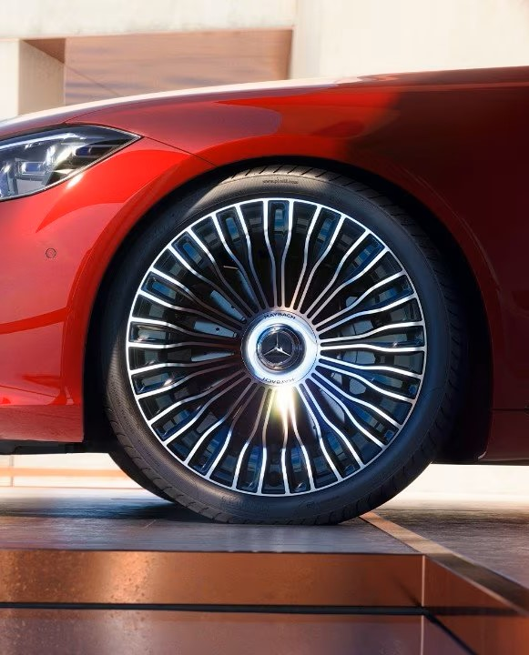
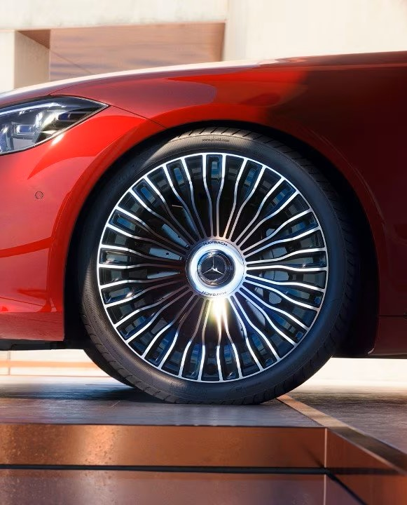

Radiator grille with 27 vertical struts in high-gloss chrome, chrome surround with centrally positioned "Maybach" lettering. The exclusive Mercedes-Maybach wheel range, for example with 21" MAYBACH forged wheels with multi-spoke design. Flush door handles are elegantly integrated into the design, and extend automatically as soon as KEYLESS-GO detects the key in the immediate vicinity. Rear apron in the colour of the vehicle, lower part in high-gloss black with chrome trim strip between the tailpipes. One of the special features of the Mercedes-Maybach S-Class is the distinctive bonnet with the central chrome trim.
With the Chauffeur package the front passenger seat can be moved significantly further forward, while its EASY ADJUST luxury head restraint can also be folded down. This allows the rear-seat passenger on that side to benefit from a better forward view. They can also give their legs a well-earned rest on the fold-out footrest behind the front passenger seat. Consummate luxury: the silver-plated champagne goblets add the perfect touch of elegance to the exclusive atmosphere in the rear of your Mercedes-Maybach. A tailor-made insert in the stowage compartment and two perfectly matching holders in the centre console even secure the goblets in place while on the move.
Cooled drinks and food always to hand. The removable refrigerated compartment is harmoniously housed in the rear armrest, and holds 10 litres. You can therefore enjoy refreshing cold drinks even when the outside temperatures are high. Create a mobile office with two desks in the rear. Two folding tables transform the business centre console of the First-Class rear suite into a comfortable work area in no time at all. The stowage trays provide space for a notebook or documents. To match the refined environment, they are finished in high-quality leather in the respective interior colour.
Even getting into the rear is as pleasant and accommodating as possible. The seat belt feeder automatically comes towards you as soon as the door is closed.
The TV tuner turns your vehicle into a home cinema. Whether stuck in a traffic tailback or taking a break in the car, thanks to digital reception you and your passengers can enjoy watching TV in brilliant resolution on the multimedia display. With the fingerprint scanner you can identify yourself quickly and conveniently. This is because your personal data, such as profiles or even office and payment functions, are protected. When you touch the colour-illuminated button, the system grants access. This is secure and also less distracting than entering a PIN. MBUX High-End Rear Seat Entertainment turns the rear compartment into a unique world of experience and working environment - for passing the time or handling important tasks. High-resolution touchscreens allow direct access to the internet and the multimedia system. State-of-the-art technology and exclusive comfort ensure an exit in a class of its own. The comfort doors in the rear of the Mercedes-Maybach S-Class practically open by themselves: at the touch of a button. This function allows you to open and close both rear doors via an electric motor. Your all-round protection from direct sunlight and prying eyes If necessary, you can quickly and conveniently raise the roller sunblinds – and noticeably reduce the heating effect on the vehicle interior. Your view to the outside remains unobscured. You can adjust the brightness and colour temperature of the interior lighting according to your taste and how you are feeling. You can also direct individual LED spotlights to your preferred position. Twinkling adaptive rear light strips complement the light functions and increase the lighting quality.
 
